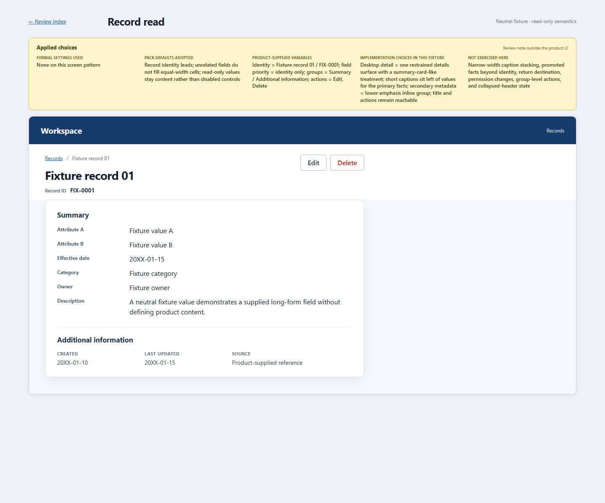
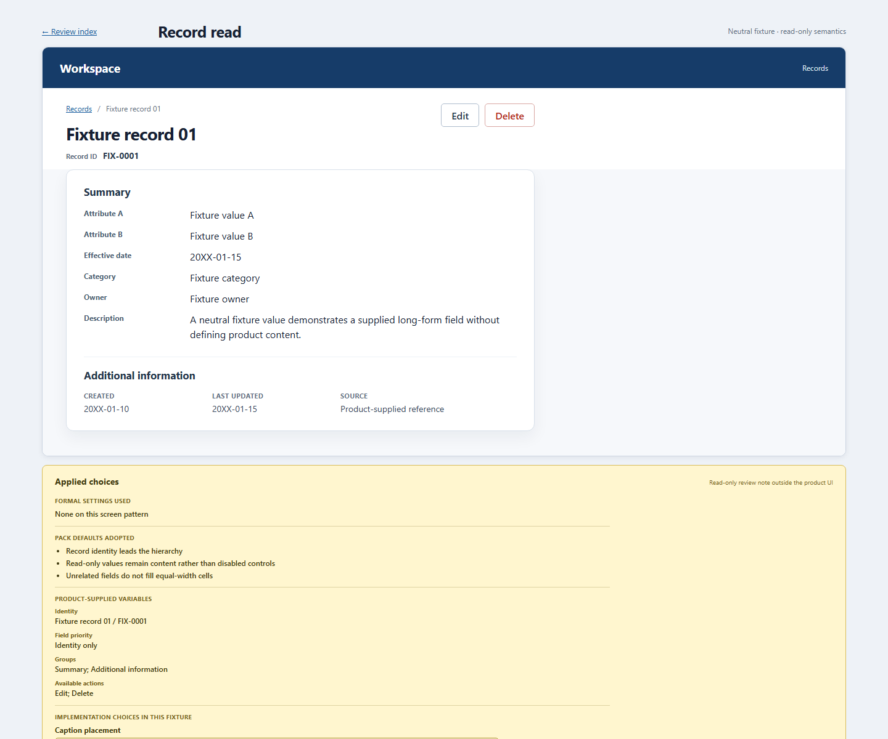

Applied choices layout comparison
Both captures use the same Record read HTML surface and the fixed 1440 × 1200 viewport.


Both captures use the same Record read HTML surface and the fixed 1440 × 1200 viewport.

